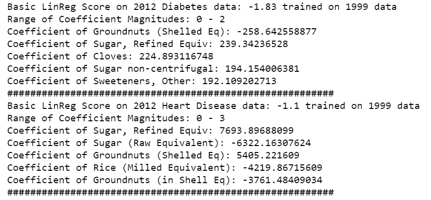
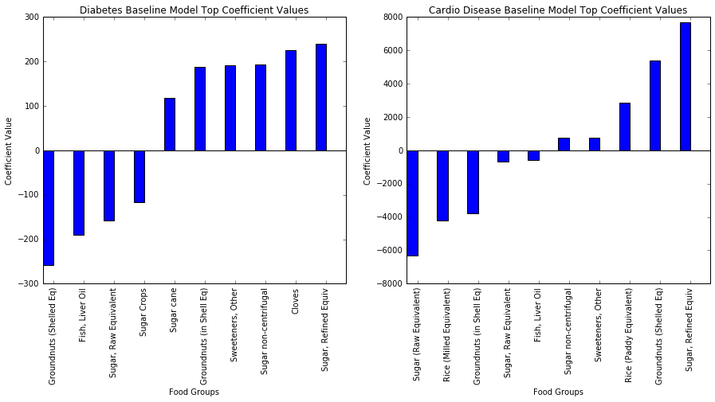
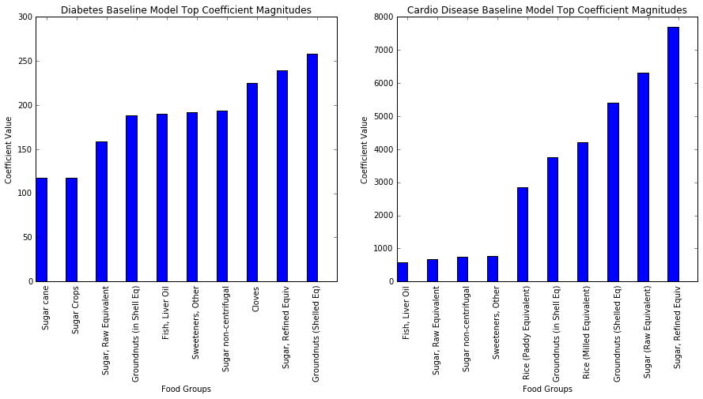
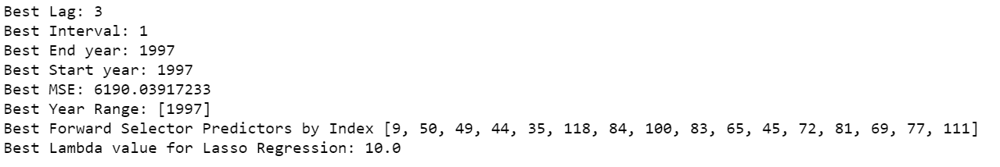
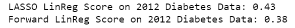
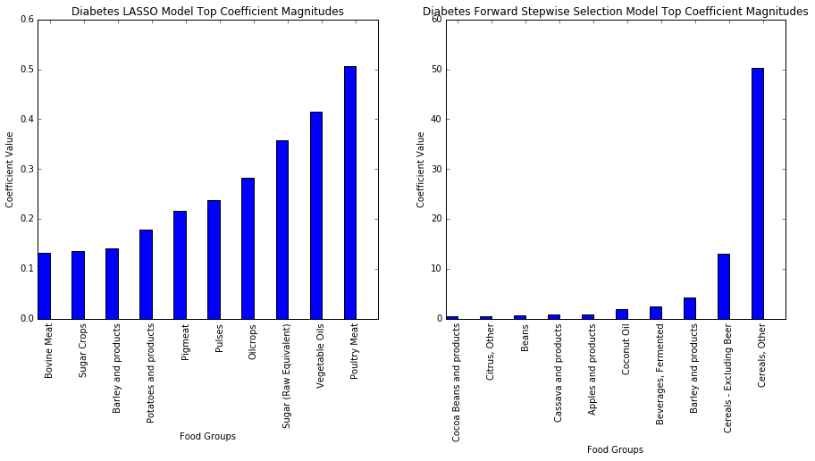
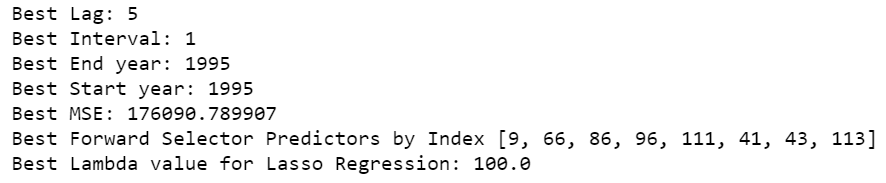
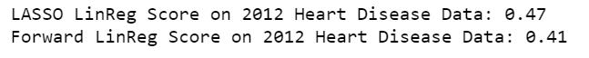
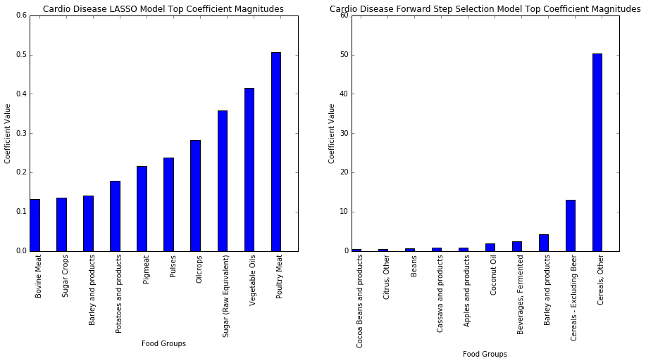

Baseline Model
After looking through our data, we now wanted to create baseline linear models to try to predict disease mortality rates using historical food consumption data. To do this, we fit 1999 consumption data onto 2000 disease data and used the model to try and predict 2012 disease mortality data using 2011 consumption data. The reason we chose these two years was because we wished to analyze the effects of historical food consumption on disease mortality rates, and given our disease data years of 2000 and 2012, we felt a simple baseline model could be created by using a country's consumption data for all food groups one year prior to predict present disease mortality rates for that country. For each set of consumption data, we iterated through all disease datasets, fit a linear regression model to all the data (consumption for each food group serves as a unique predictor, and disease mortality rate serves as the response variable), and printed the resulting score as well as the magnitudes of the largest model coefficients.
A null model where we predict the global average mortality rate for each country would have an R^2 score of 0: our baseline models perform worse than just using the mean as the prediction. This is probably because the baseline model, which uses all the features, is overfit onto the 1999 data. Our improved models seek to build on our baseline to accurately predict disease mortality rates while avoiding overfitting the training dataset.
We further analyzed our model results by examining the most positive and negative coefficient values (corresponding to values of predictors in our model, which we defined to be consumption of food groups).
When we look at the top 10 predictors for diabetes and heart disease mortality, we see foods that background knowledge tells us is strongly associated with those illnesses (sugar, rice, and groundnuts). However, similar food groups have large coefficients but opposite sides, namely Sugar (Raw Equivalent) and Sugar, Refined Equivalent. Although this would imply that sugar both strongly increases and decreases diabetes/heart disease mortality rate, we should recall the meaning of the regression coefficient: it is associated with a change in Y, holding all other Xs constant. Given the nature of food and cooking, many meals contain ingredients which would fall into multiple food groups, making increasing consumption of one food while holding other constant difficult in reality. This is seen in the slight correlation of foods in the heat map above: not large enough to invalidate the model, but large enough to cloud the interpretation of coefficients. As a result, it is more important to consider the magnitude of the coefficients and the kinds of food groups with the largest coefficients than the coefficients' signs. Thus, we instead plot the largest coefficients in order of their respective magnitudes.
Unsurprisingly, sugars account for 7 of the top 10 predictors for diabetes mortality. The remaining 3 (cloves, fish oil, and groundnuts) have been shown to reduce glucose levels, and help mitigate diabetes risk. Similarly, foods high in refined sugars and carbohydrates, e.g. sugars/sweeteners and paddy (white) rice, are bad for heart health and thus appear in 6 of the top 10 most important predictors for heart disease mortality rates. Groundnuts and milled rice by contrast reduce blood pressure and are better for heart health.
Improved Models
Added Functions
To improve upon this model, we added three functions to help create two models. First, we simultaneously considered how large of a time lag and how wide of a time interval was best for modeling a particular disease. For every possible interval between 1993 (the most recent year where a country formed out of the fall of the USSR started reporting data) and the year of the disease data's collection, it ran a 10-Fold cross validation to find the average Mean Squared Error of the model using that interval/lag. Ultimately, the function printed out the best lag and interval length and returned the best range of years.
Secondly, we created another function to use forward stepwise selection to select the best predictors, adding the predictor that resulted in the largest increase in R^2 value and stopping if the model's BIC increased as a result, meaning that the increased accuracy wasn't worth the increased complexity.
Thirdly, we used LASSO regression to find the best subset, given a year range. Our third function found the best lambda (from a list of powers from 10^-7 to 10^7) by running 10-fold cross validation on consumption and disease data from the inputted year, training on 9 of the folds and testing on the remaining one. The lambda that resulted in the lowest Mean Squared Error was then used in a Lasso Regression model fit on all of the data of the given year.
Diabetes Models
Our results from running the aforementioned three functions on the diabetes data were as follows:
Given the best year range and the best subset of predictors / lambda for the diabetes data, we were able to construct Forward Stepwise Linear Regression and LASSO Regression models. The models were trained on 2000 diabetes data before moving the year interval forward by 12 years and testing on 2012 diabetes data. Their R^2 scores and model coefficients were as follows:
 LASSO and forward selection have very different top 10 predictors. Although LASSO regularizes out foods which are correlated with each other - particularly processed foods such as the many kinds of sugar - sugar still appears twice, highlighting its importance as a predictor, and carbohydrates reappear in potatoes and barley products. Moreover, meat products are introduced as important predictors. Since a person can only eat so much meat, eating one kind decreases consumption of another. As a result, increased consumption leaner meats, such as poultry, causes people to eat less of fattier ones such as pigmeat (and bovine meat to a lesser extent) which are worse for diabetes risk.
The size of the coefficients from forward selection drop rapidly, and the largest two are several times larger than the bottom 8: we should focus our analysis on them. Unsurprisingly, the top 2 predictors are cereals, high in carbohydrates and thus bad for diabetes risk. Additionally, the next two, while significantly smaller, are barley and fermented beverages which are also high in carbohydrates.
Since LASSO regression has a higher R^2 value, we can say that it's a better model and feel more strongly about its predictors' relationships with diabetes.
Cardio Disease Models
We next fit and scored models on our cardio disease data in a similar fashion to our approach with the diabetes data, graphing the coefficients with the largest magnitudes at the end.
  Similar to above, LASSO and forward selection result in very different top 10 predictors. LASSO regularization again shrinks all coefficients down to small numers, and zeros out repeats, but carbohydrates and sugars such as those seen in cereal, wheat, sugars, and alcoholic beverages are bad for heart health and account for 7 of the top 10. Milk and whole milk account for two the predictors: although it can be good for you, milk, especially whole milk, contains cholesterol which is bad in excess. Finally, while mandrine oranges contain vital nutrients, their place at the top should not be overstated: it's coefficient is still barely above one.
While the exponential growth of coefficient magnitude is present in forward selection, the top 4 predictors are all once again high in carbohydrates - 3 of which are explicitly alcohol products - which when consumed in excess are associated with poor heart health.
Again, the LASSO model has a slightly higher R^2 value, suggesting that it fits the data better than the forward stepwise selection model.
In the cases of diabetes and heart disease, regardless of whether we used LASSO or forward selection, our models consistently returned R^2 values of ~0.4. While this is better than our baseline and null models, these results suggest that diet plays an important, but not overwhelming role in mortality rate. It is likely, then, that other factors such as body weight, fitness level and income/healthcare also play a role in the mortality rates of these diseases.